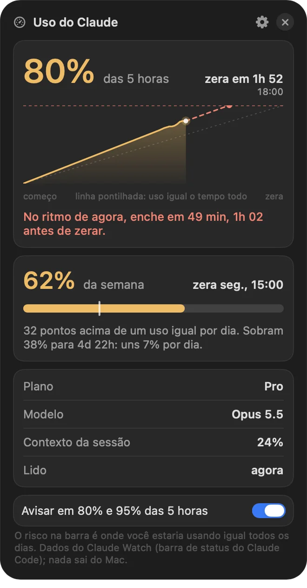

Um Dock para o Mac com widgets dentro.
Seus apps, 67 widgets, ilhas e workspaces. No lugar do Dock do macOS.

Clique num widget.
67 widgets.
Em 88 visuais e quatro tamanhos. Do relógio ao uso do Claude.
Um clique abre a ilha.
Controles e ajustes de cada widget, flutuando acima do Dock.
Um Dock para cada momento.
7 perfis prontos. Troque pelas abas, por atalho ou por horário.
8 temas. Ou a cor da sua música.
O Dock pega a cor do papel de parede ou da capa que está tocando.
O Dock de cada tema é uma captura do app de verdade.
E tem mais.
Busca
Apps, arquivos, contas e moedas. Digite 100 usd.
Clipboard
Tudo o que você copiou, com busca.
Uso do Claude
Seu limite do Claude Code, com previsão e aviso.

Janelas
Param antes do Dock e se arrumam lado a lado.
Avisos
Uma pílula sai do Dock quando o Claude Code termina.
Seus apps
Vêm do Dock do macOS, na mesma ordem.
R$ 49
Uma vez só. Com as atualizações.
Comprar o Cais- Pix ou cartão
- Entrega na hora, por e-mail
- 7 dias para reembolso
- macOS 14 ou mais novo, chip Apple
Perguntas.
O Dock do macOS some?
Só se você quiser. Há um ajuste "Esconder o Dock do macOS", e ele volta ao normal quando você sai do Cais.
Funciona em Mac com Intel?
Não. O Cais roda em Macs com chip Apple (M1 em diante), com macOS 14 ou mais novo.
Como recebo depois de pagar?
O pagamento é feito na Cakto. Assim que ele é aprovado, chega um e-mail com o código da compra e o link de instalação.
Por que a instalação é pelo Terminal?
O Cais não está na App Store nem passou pela notarização da Apple, que exige uma conta paga de desenvolvedor. Um app assim, baixado pelo navegador, é barrado pelo macOS na primeira abertura. Instalado pelo comando do Terminal ele abre direto. Quem preferir o .dmg precisa liberar o app uma vez em Ajustes do Sistema, Privacidade e Segurança, botão "Abrir Mesmo Assim".
Como chegam as atualizações?
O Cais procura versão nova sozinho. Quando tem, aparece um aviso e um botão "Instalar e reiniciar".
E se eu não gostar?
Você tem 7 dias a partir da compra para pedir o reembolso, pela própria Cakto.
Já comprei. Onde instalo?
Na página de instalação, com o código que chegou no e-mail da compra.